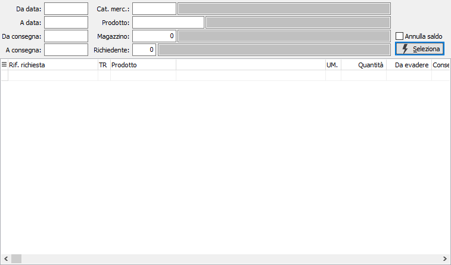
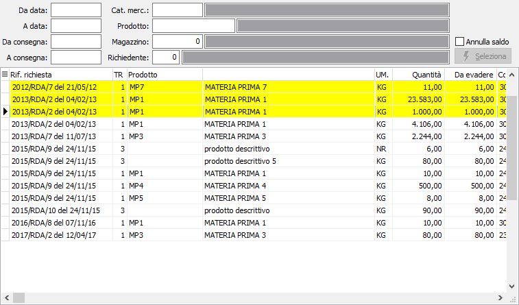

Saldo richieste
La funzione consente di chiudere richieste di acquisto che non verranno mai evase.
Come limiti di selezione possono essere inserite le date richiesta o consegna, la categoria merceologica, il prodotto, il magazzino e l'eventuale utente richiedente; è inoltre possibile, spuntando la casella "Annulla saldo" effettuare l'operazione di annullamento con le stesse caratteristiche descritte per il saldo.

La pressione del pulsante seleziona mostra i dati in griglia relativi alle richieste selezionate.

Dalla griglia è possibile effettuare il saldo delle singole richieste con il doppio clic del mouse oppure tramite i menù contestuali accessibili tramite il tasto destro del mouse; per rendere effettivo la registrazione, è necessario confermare premendo il bottone Salva o il tasto funzione F10.